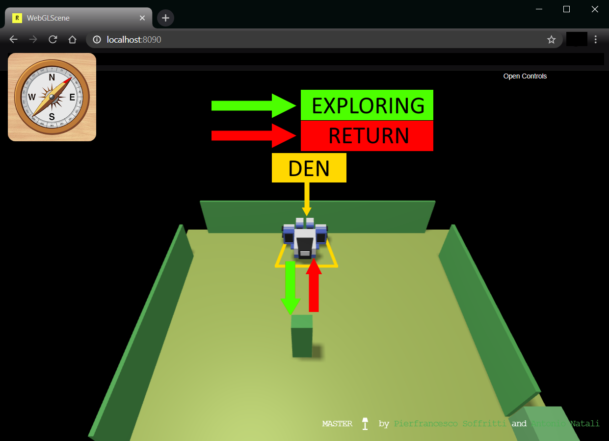

Introduction
Requirements
Delivery
The customer requires to receive the completion of the analysis (of the requirments and of the problem) by
Friday 12 March.
Hopefully, he/she expects to receive also (in the same document) some detail about the project.
The name of the file (in pdf) should be:
cognome_nome_ce.pdf
Requirement analysis
The interview with the client has outlined the following meanings for the
initial requirements:
- robot - a device that can move forward, backward and rotate, detecting when
it collides with obstacles. To execute the movements the robot receives commands through
the network, as described in VirtualRobot2021.html.
- closed environment - the space within which the robot exists and can move. This space
has unknow dimensions and is delimited by walls, with which the robot collides. Moreover, it
contains an unknown number of obstacles, with which the robot collides.
- den - the starting position of the robot. This is the space from which the robot begins
to move to explore the environment and to which the robot returns whenever it encounters an
obstacle. This place must be editable only before the execution and has to be located near a wall.
.
- obstacles - fixed objects within the environment, that prevent the robot from passing
through them. Walls are obstacles too and the robot cannot tell the difference between the two.
- cautious - the robot is 'cautios' because as soon as it collides with an obstacle,
which could involve a dangerous situations, it returns immediately to its den. It does not make
further actions before doing so.
- mental map - something the robot needs to remember the area it has explored, so it
does not collide with the same obstacles. The map can also be useful to recognize the best path
if there are more than once.
- Optionally - it means that the referred feature in particular can be enabled and
disabled at will.
About actions:
- lives - the robot exists, can move and perform all its exploring actions (the robot
does all of this inside the closed environment, it cannot leave or get out of its perimeter).
- detect - know that the robot has passed through the range of action of the device
(e.g. sonar).
Main user story
As a user I set the robot to start from the den.
which is located near a wall. Then I enable the system cautiousExplorer that start
sending commands to the robot through the network. The system collects informations (about
the result of its moving actions and the collisions) that the robot sends back, and uses
them to decide where to move the robot next. While doing this, the system incrementally
builds the mental map to prevent the robot from colliding to the same obstacles.
When the system execution ends, I expect that the robot has successfully explored every
reachable spot inside the environment, finding the position of every obstacle inside of it. |
 |
Informal first set of functional test plans
The TestPlan must verify that the robot, after a collision with an obstacle, returns to the den,
as shown in the figure on the right. Moreover, after this, it must check that the robot actually
choose a different path so it doesn't hit the same obstacle again.
This way the robot can effectively explore the whole environment.
Problem analysis
Relevant aspects
Logical architecture
Main problems
Test plans
Project
Testing
Deployment
Maintenance